Interactive R, Python, and Shiny in the Browser
Introduction
Picture this:
First day of class…
Picture this:
First day of class…
“Professor, I tried installing R but my laptop keeps running out of space.”
Picture this:
To your boss…
“I created this great dashboard, but IT is taking forever to approve the server request.”
Picture this:
With your colleague…
“Sorry, I don’t have R set up on my laptop.”
What is WebAssembly?
WebAssemby is a low-level, high-performance binary instruction format that allows code to run in web browsers.
Example: Interactive R console
Packages with webR
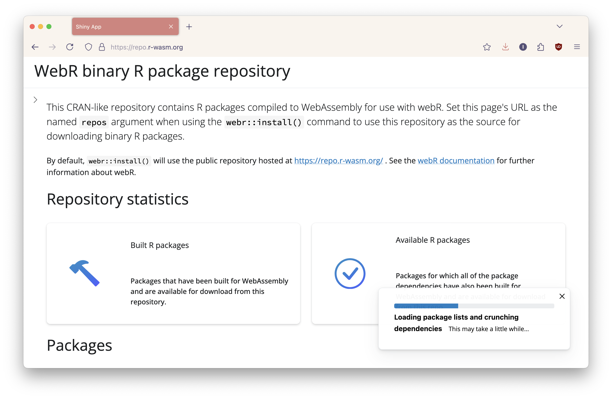
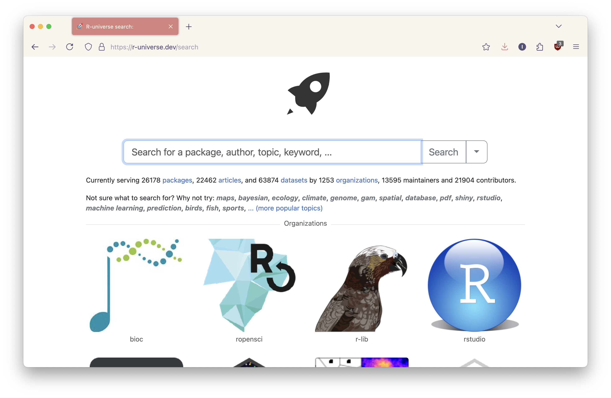
How to use webR
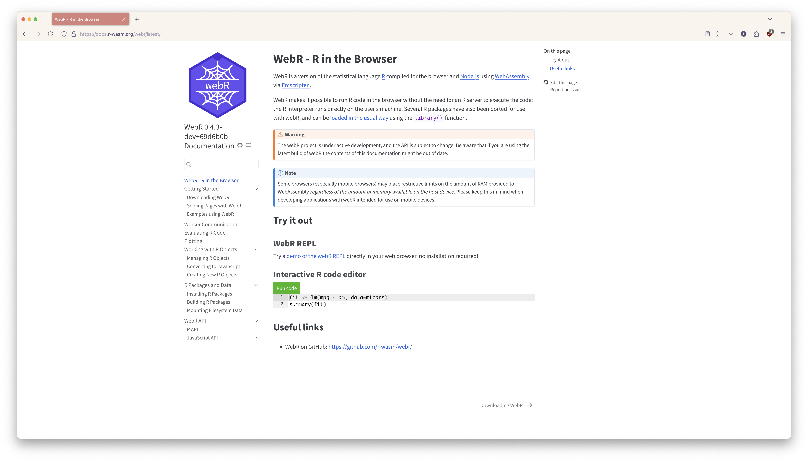
How to use webR
Install the package:
Import the WebR class:
What if you don’t know JavaScript? 😅
Introduction to Quarto
- The next evolution of R Markdown
- A publishing system for R, Python, and more
- Creates notebooks, dashboards, books, reports, presentations
Anatomy of a Quarto document
---
title: "ggplot2 demo"
format:
html:
code-fold: true
---
## Meet Quarto
Quarto enables you to weave together content and executable code into a finished document. To learn more about Quarto see <https://quarto.org>.
```{r}
#| label: plot-penguins
#| echo: false
#| message: false
#| warning: false
library(tidyverse)
library(palmerpenguins)
ggplot(penguins,
aes(x = flipper_length_mm, y = bill_length_mm)) +
geom_point(aes(color = species, shape = species)) +
scale_color_manual(values = c("darkorange","purple","cyan4")) +
labs(
title = "Flipper and bill length",
subtitle = "Dimensions for penguins at Palmer Station LTER",
x = "Flipper length (mm)", y = "Bill length (mm)",
color = "Penguin species", shape = "Penguin species"
) +
theme_minimal()
```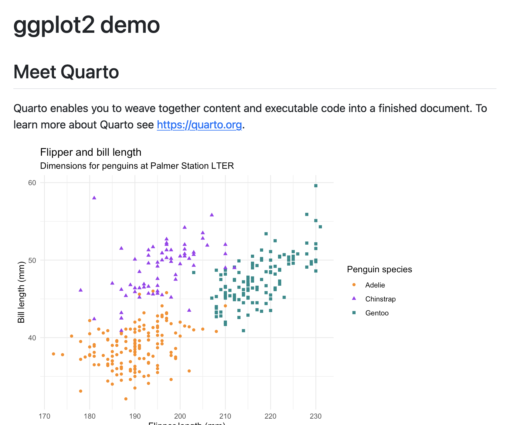
Quarto extensions

Scrollytelling extension
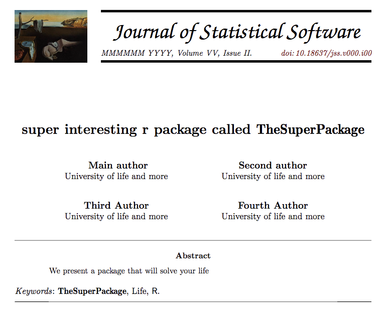
Journal of Statistical Software (JSS)
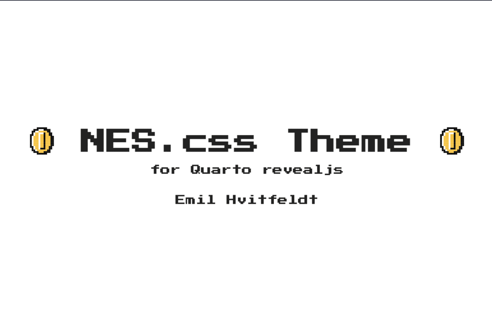
nes-revealjs format by EmilHvitfeldt
Quarto extensions
For example, there’s a fontawesome extension.
Install the extension:
Add to your Quarto document YAML heading:
Quarto extensions
Use the extension in the doc:
Results in:
Quarto extensions
Quarto extension gallery by Mickaël Canouil
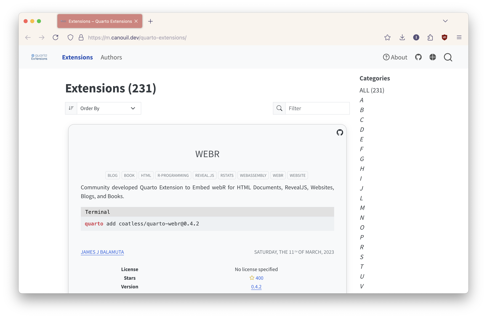
Introduction to Quarto Live
Quarto Live embeds WebAssembly powered code blocks and exercises for R and Python into Quarto documents with HTML-based output formats.
How to install Quarto Live
Install the extension:
Add to your Quarto document YAML header:
How to install Quarto Live
Install the extension:
Add to your Quarto document YAML header:
How to use Quarto Live
- Place code in a
webrcode chunk for R - Place code in a
pyodidecode chunk for Python
How to use Quarto Live
Can be used in presentations too:
- Edit your YAML header to
live-revealjs:
- Use the
quarto-dropextension to drop an R or Python console into your slides
How to use Quarto Live
Options include:
- Creating read-only cells
- Autorun
- Autocomplete
- and more!
Installing packages
As the document loads
Installing packages
Interactively
Displaying plots
Creating exercises
Designating a webr chunk as an exercise (with optional setup code, hints, solutions, and grading).
Hint 1
Consider subtracting 1, 2, and 3 from 10.
Tip
The answer is 4 ☺️
Example: Claus Wilke Introduction to R
Example: Six not-so-basic base R functions
webR love 💜
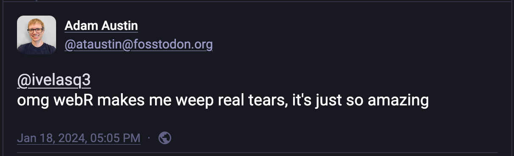Introduction to Shiny
Shiny allows you to create web apps, no web development skills required.
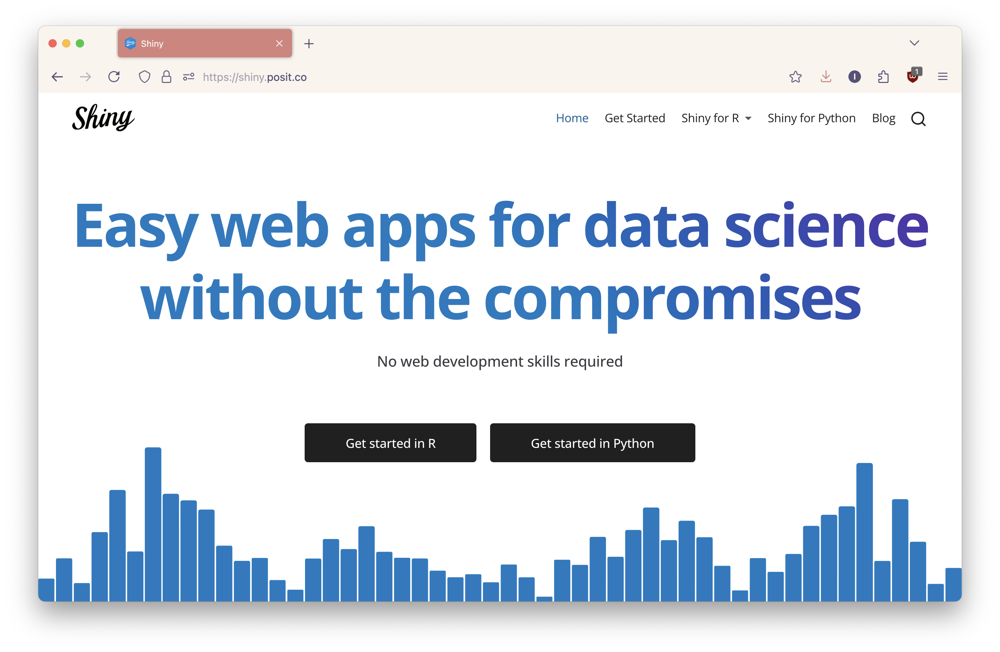
Traditional Shiny architecture
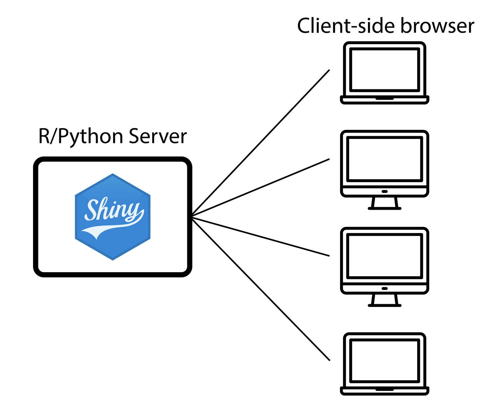
Hosting Shiny apps
On-Prem
- Shiny Server (open source)
- Posit Connect (enterprise)
- Roll your own
Hosting Shiny apps
Some web services offer scalability, features, and cost:
But they can’t run traditional Shiny apps!
Introduction to Shinylive
#| '!! shinylive warning !!': |
#| shinylive does not work in self-contained HTML documents.
#| Please set `embed-resources: false` in your metadata.
#| standalone: true
#| viewerHeight: 500
library(shiny)
library(bslib)
ui <- page_sidebar(
title = "Simple Shiny App",
theme = bs_theme(bootswatch = "flatly"),
sidebar = sidebar(
numericInput("number", "Enter a number:", value = 5, min = 1, max = 100),
selectInput("color", "Choose color:",
choices = c("red", "blue", "green", "purple"))
),
card(
card_header("Result"),
card_body(
plotOutput("plot")
)
)
)
server <- function(input, output) {
output$plot <- renderPlot({
plot(1:input$number,
col = input$color,
pch = 19,
cex = 2,
main = "Simple Plot",
xlab = "Index",
ylab = "Value")
})
}
shinyApp(ui, server)Shinylive architecture
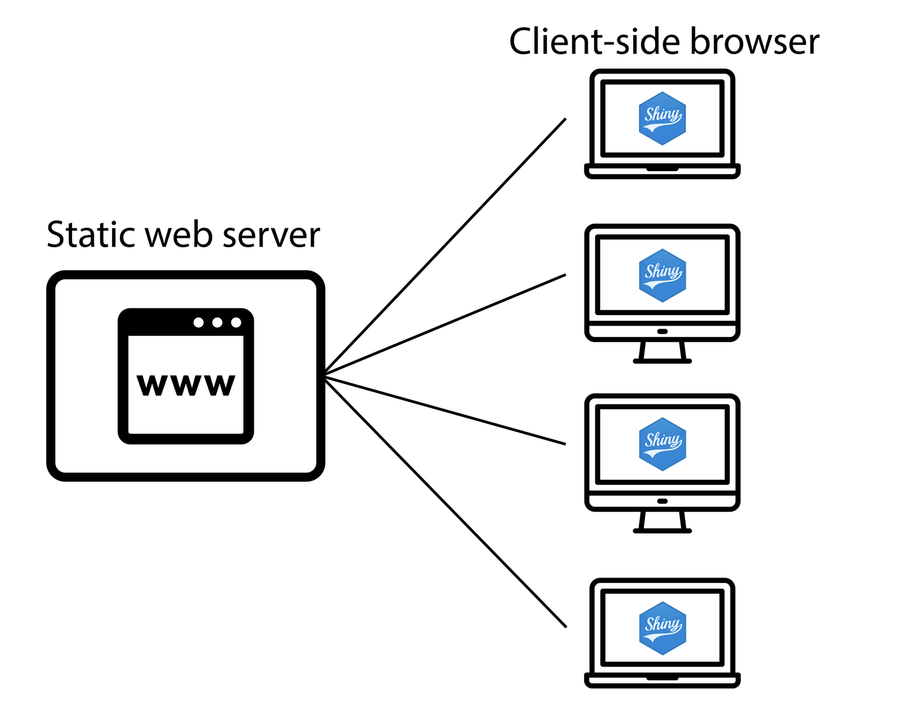
How to use Shinylive
- Shinylive online editor
- Convert a Shiny app
- Embed a Shiny app with Quarto
How to use Shinylive
Shinylive online editor

How to use Shinylive
Convert a Shiny app
Install the package:
How to use Shinylive
Convert a Shiny app
Export the app:
How to use Shinylive
Convert a Shiny app
Start a web server for the directory:
How to use Shinylive
Embed a Shiny app with Quarto
Install the Quarto extension:
Add to your Quarto document YAML heading:
How to use Shinylive
Embed a Shiny app with Quarto
Insert a code block with {shinylive-python} or {shinylive-r}
Example: Shiny for Python docs
Example: Claus Wilke’s Color Picker App
Example: Shiny Assistant
Use cases
- Share interactive reports and dashboards with executable code
- Create and distribute interactive, reproducible documentation
- R-based submissions of clinical trial data to regulatory bodies for review
- Teaching and learning
Benefits of web-based R and Python
- Share interactive reports and dashboards easily
- No installation required for the user
- Works on any device (tablets, Chromebooks)
Limitations and considerations
- Under active development and things might change
- Some packages are not yet supported in WebAssembly
- Some packages may depend on network access and may not work
- Security considerations (everything runs client-side)
- Performance limitations for large datasets and packages or intensive tasks
Best practices
- Keep computations lightweight
- Structure code efficiently
- Manage dependencies
- Choose the right tool for the job
“Exploring a new frontier”
bit.ly/interactive-data-science